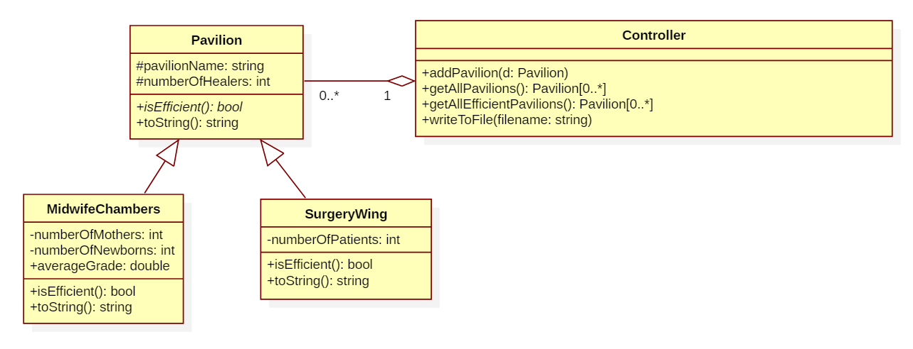

The healers of the Ancient City have
enlisted a number of Spire mages to assist them in a matter of
administration. The Wards of the Old Quarter have been reopened in light
of recent - magically augmented refurbishments. As efforts are being
made to rekindle the glory of the edifices' forgone days, an Eldmender
of the Council of Healers is in need of an enchantment that, when
affixed to one of the many altars of the Wards, will help his
subordinates perform their duties with greater alacrity.
The enchantment allows its users to add two types of Ward pavilion:
- Surgery wing - is characterized by an integer value, representing
the number of patients. The pavilion is considered efficient if each
healer is assigned to treat at least two patients (the ratio of
patients/healers must be >= 2).
- Midwife chambers – is characterized by a number of newborns, the
average grade for the newborns and the number of patients admitted for
giving birth (mothers). The pavilion is considered efficient if the
average grade of all babies born is > 8.5 and if the number of
newborns is >= the number of patients (mothers).
The enchantment should allow the following functionalities:
- Add a new pavilion. Read the type of pavilion and the number of
healers. If it is “Surgery”, then read the number of patients, otherwise
the number of mothers, number of babies, and an average grade of the
babies. (2.5p)
- Show all pavilions, with their correct information. (1p)
- Show all the efficient pavilions in the Old Quarter Wards. The score
for this functionality is given only if you use inheritance and
polymorphism, as shown in the UML diagram below. (2p)
- Save all the registered pavilions to a file. For each ward, write
the correct data to the file: pavilion name, type (Surgery wing or
Midwife chambers), number of healers, number of patients (for the
Surgery wing), number of babies and average grade (for the Midwife
Chambers) and if it is efficient ("efficient" or "not efficient"). (2.5p)
The score for this functionality is given only if you use inheritance
and polymorphism, as shown in the UML diagram below. The wards will be
sorted ascending by the name of the Ward sub-edifice in which they are
located. (1p)
All commands must be in the form:
- add pavilionName, departmentType, numberOfHealers, numberOfPatients
- add pavilionName, departmentType, numberOfHealers, numberOfMothers, numberOfBabies, averageGrade
- list
- list efficient
- fileLocation c:\some really long\path\with spaces\myFileName.txt
- exit
The enchantment must use a layered architecture and have at least 2
layers (one must be the UI). Otherwise, the maximum score for each
requirement is 50% of the indicated score.
1p – Default

Obs. You can add new attributes or operations besides the ones on the diagram, if needed.
Allotted time: 60 minutes. Source files must be sent to commit@scs.ubbcluj.ro no later than 10 minutes after exam end.
A quick refference for documentation: http://en.cppreference.com/w/, http://www.cplusplus.com/
Example of a test run 1:
- call: add abc, Neonatal Unit, 1, 2, 3, 4.4
- call: list
- expected: displayed on the screen: abc[ignored]Neonatal Unit[ignored]1[ignored]2[ignored]3[ignored]4.4
Example of a test run 2:
- call: fileLocation c:\some really long\path\with spaces\myFileName.txt
- call: add abc, Surgery, 5, 10
- call: list
- expected: file is created and contains: abc[ignored]Surgery[ignored]5[ignored]10[ignored]efficient